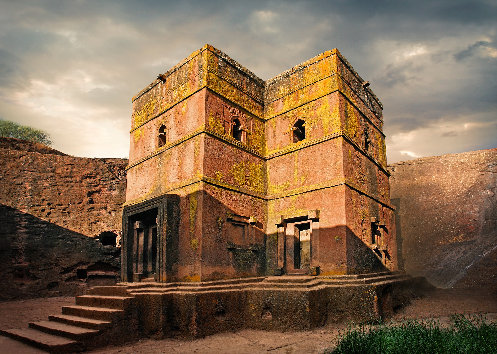

Cross
Lalibela (Amharic: ላሊበላ) is a town in the Amhara Region of Ethiopia. Located in the Lasta district and North Wollo Zone, it is a tourist site for its famous rock-cut monolithic churches. The whole of Lalibela is a large and important site for the antiquity, medieval, and post-medieval civilization of Ethiopia.
